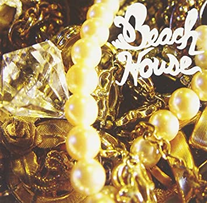
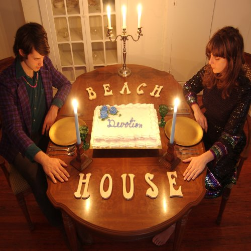
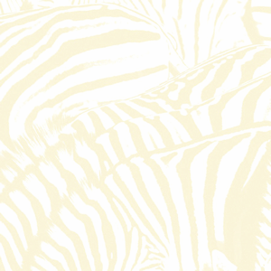
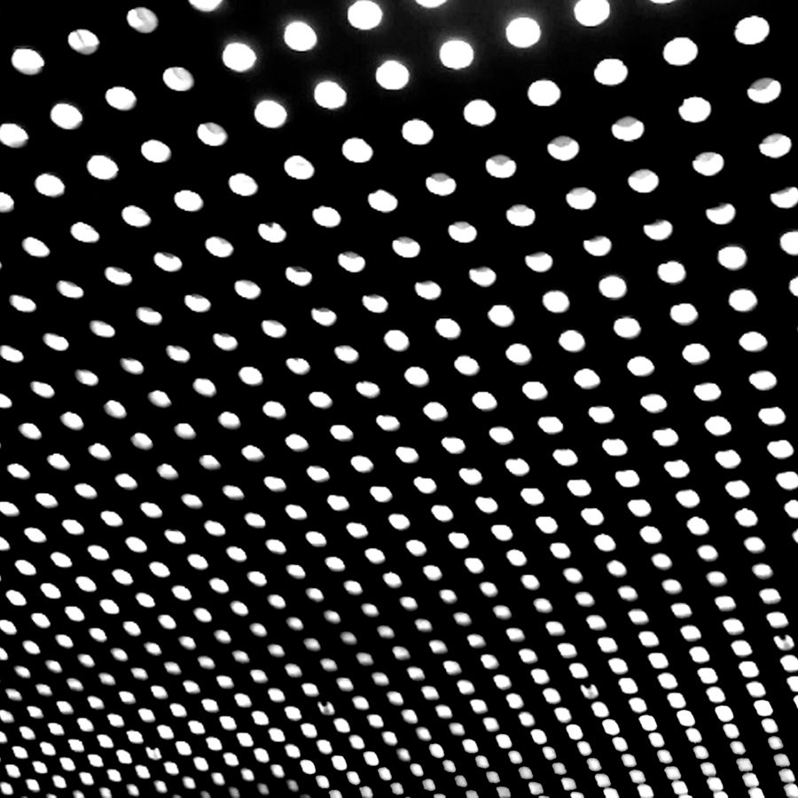
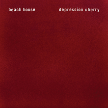
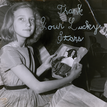
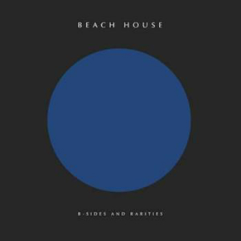

Beach Housemore_vert
Beach Houseclose
Beach House is the debut studio album by American dream pop duo Beach House. It was released on October 3, 2006, by Carpark Records and in Europe by Bella Union. The album received mostly positive reviews from music critics. The album had a remastered reissue in 2010 by HeartBreakBeat Records with a run limited to 1,000 copies on black vinyl. In 2012, a pressing on special edition white vinyl was released through Bella Union. In 2015, the band self-released a white cassette during the Depression Cherry tour. As of April 2012 Beach House has sold 24,000 copies in United States according to Nielsen Soundscan. The album was recorded on a 4-track over a two day period in Scally's basement.

Devotionmore_vert
Devotionclose
Beach House's second album, Devotion, was released on February 26, 2008. It was received with similar acclaim as the first album and was likewise included in Pitchfork's Best Albums of 2008 list. On October 21, 2008, the group released the single "Used to Be". Beach House also recorded a cover of Queen's "Play the Game" for the iTunes Store release of the Red Hot Organization's 2009 compilation Dark Was The Night. In 2009, Legrand provided backing vocals on the song "Two Weeks" by the indie rock band Grizzly Bear. She later collaborated with the band again by providing vocals to "Slow Life", the band's contribution to the soundtrack for the film Twilight: New Moon. In October 2010, the band contributed a charity T-shirt for the Yellow Bird Project to raise money for the House of Ruth women's shelter in Maryland for victims of domestic violence.

Teen Dreammore_vert
Teen Dreamclose
Teen Dream, the duo's "dynamic and intense" third album, was released on Sub Pop on January 26, 2010. It was released in the UK by Bella Union and in Mexico by Arts & Crafts. It contains a newer version of their 2008 single "Used to Be". Meanwhile, "Norway", the first single off ''Teen Dream'', was made available as a free download on the band's website on November 17, 2009; it was later promoted on iTunes as the Free Single of the Week starting January 12, 2010. The album was produced and engineered by Chris Coady (Yeah Yeah Yeahs, TV on the Radio, Grizzly Bear). Music videos were made both for songs, "Silver Soul" and "Real Love", created by famed collective, The Masses. The album's unanimously positive reviews garnered the band a larger fan base, with Jay-Z and Beyoncé being spotted at the band's shows. Teen Dream was listed as number 5 on Pitchfork's Top 50 Albums of 2010 with the following notes: Teen Dream did little to alter Beach House's core characteristics---slow-motion beats layered with hazy keyboard drones, rippling guitar figures, and Victoria Legrand's melancholic melodies---but greatly amplified them to the point of redefining the band's essence, from that of introverted knee-gazers into an assured, emotionally assertive force. -- Stuart Berman Of the success of the album and it being dubbed the group's "breakout" record by numerous publications, Legrand stated: "I see this as just another step in a direction. I would not want to say that 2010 will be our year, necessarily, I hope it’s just another year in which we do good work. I don’t want to be defined by this year, I want it to just be a beginning." The album was also included in the book 1001 Albums You Must Hear Before You Die.

Bloommore_vert
Bloomclose
On March 7, 2012 the band streamed a new song, "Myth", from their website. The album Bloom was released on May 15, 2012 via Sub Pop. A second song from the album, "Lazuli", was released on April 13, 2012.[21] Beach House was featured on the cover of Issue #80 of the Fader. A music video for "Lazuli" was released on June 6, 2012. It was directed by Allen Cordell, who also directed the video for "Walk in the Park" from Teen Dream. A music video for the track "Wild" has also been released. A music video for "Wishes" directed by Eric Wareheim and starring Ray Wise was released on March 7, 2013. The band released a short film, Forever Still, on February 4, 2013. The film, directed by the band and Max Goldman, was inspired by Pink Floyd's Live at Pompeii and features the band performing songs from Bloom at various sites around Tornillo, Texas, where the album was recorded. The idea for the film came from the band's desire to make quality promotional content they could control artistically: "We had previously been involved in too many live sessions, radio tapings, photoshoots, etc., where the outcome was far below our personal artistic standards. We also felt a need to distance ourselves from the 'content' culture of the internet that rewards quantity over quality and shock over nuance."

Depression Cherrymore_vert
Depression Cherryclose
On May 26, 2015, the band announced their fifth album Depression Cherry. It was released on August 28 via Sub Pop (on Bella Union in the UK)[28] and the band announced a world tour in support. Talking about the direction of the new album, the band said, "In general, this record shows a return to simplicity, with songs structured around a melody and a few instruments, with live drums playing a far lesser role. With the growing success of Teen Dream and Bloom, the larger stages and bigger rooms naturally drove us towards a louder, more aggressive place; a place farther from our natural tendencies. Here, we continue to let ourselves evolve while fully ignoring the commercial context in which we exist."[29] "I think, this album continues to change meaning for me. But if anything, it's full of many things. Love, pain, getting older, dealing with loss, letting go. It's really ultimately whatever the listener feels in response to it," has Legrand described.[30] "The name Depression Cherry is like a dance between these two energies. That very abstract feeling summed up the energy field of the record for us," specifies Victoria.[31] This LP received praise from critics.[32]

Thank Your Lucky Starsmore_vert
Thank Your Lucky Starsclose
On October 7, 2015, the band announced a sixth album, entitled Thank Your Lucky Stars, which was released on October 16, 2015. On September 28, 2015, popular music webzine Spin reported that the band had performed a new song called "Helicopter Dream (I'm Awake)" on Flaming Lips frontman Wayne Coyne's new podcast. Other music webzines also reported on the purported new track, including Consequence of Sound, Fact, and Stereogum. However, according to the band's representatives, the song was a fake. In an email to Spin, their representatives state, "It is not a new song. Not even their voices on that podcast. Sorry!" This led to a thinkpiece from the gossip blog Gawker, which used the hoax as an example of "how easy it is to fool a blogger". Notably, reaction to the fake track was largely favorable, with Spin calling it a "fuzzy space-odyssey" and Consequence of Sound describing it as "a reverb-soaked number."[35] Even the band itself gave a positive review, tweeting, "To whoever made that fake podcast interview, we like your helicopter dream song." The fake song and podcast hoax was named by Vice's Noisey as one of "The Best Trolls of 2015."

B-Sides and Raritiesmore_vert
B-Sides and Raritiesclose
On January 31, 2017, the band announced a North American tour. In addition, they announced that they were working on a compilation of B-Sides and rarities. The compilation, B-Sides and Rarities, was eventually released on June 30, 2017, and was supported by a new song, "Chariot", which served as the lead single of the compilation and one of the two previously unreleased songs on it. Band describes that it felt like a good step for them. It helped them to clean the creative closet, put the past to bed, and start anew.

7more_vert
7close
On February 15, 2018, the band released a new song, "Lemon Glow," and announced it as the lead single from their then-upcoming album which they said would be released "later this spring." On March 7, the band released another single from the album, "Dive", alongside an announcement of the album's title. 7 is the seventh studio album by Beach House, released on May 11, 2018, through Sub Pop. It follows the B-Sides and Rarities compilation album released in 2017, which served as a proverbial "cleaning out the closet" to pave the way for a new creative process. The album saw the group's departure from longtime producer Chris Coady. 7 was co-produced by Beach House and Pete “Sonic Boom” Kember. His work with Spacemen 3 and Spectrum impressed the band to reach out and see if he might like to co-produce the album with them. The record also features drums from James Barone, the band's longtime live drummer. Throughout the process of recording 7, the band's goal was rebirth and rejuvenation. They wanted to rethink old methods and shed some self-imposed limitations. In the past, they've often limited their writing to parts that they can perform live. On 7, they decided to follow whatever came naturally. As a result, there are some songs with no guitar, and some without keyboard. There are songs with layers and production that they could never recreate live, and that was exciting to them. Basically, letting creative moods, instead of instrumentation, dictate the album’s feel. ‘’This album felt really kinetic. We tend to make pretty still music, and this record felt like we were really excited by the kind of bubbling, chaotic, discordant energy field. … The vibe and the show are getting more energetic and messy, but in what I think is a cool way. Maybe a little bit more “rock and roll,” to use the old term,’’ adds Scally. On October 23, 2018, the band released a limited edition 7-inch vinyl of "Lose Your Smile" from 7 as the A-side and a new track from the recording sessions of 7 titled "Alien" as the B-side. The vinyl was originally sold on the band's European tour in dates from September to October. In addition, "Alien" was released as a standalone single to digital download and streaming services.